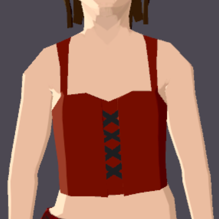
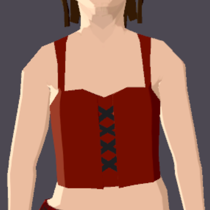
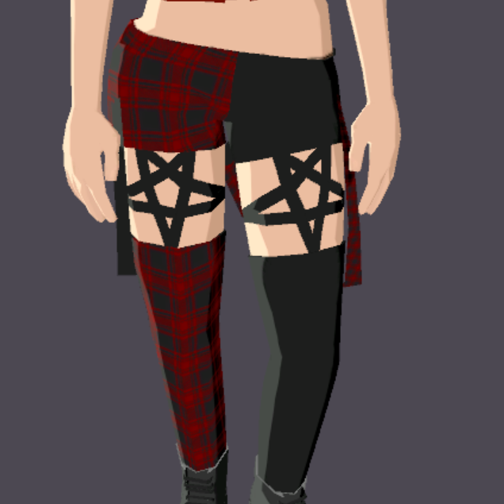
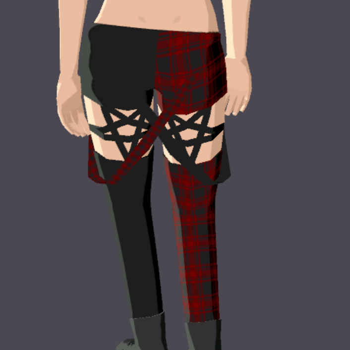
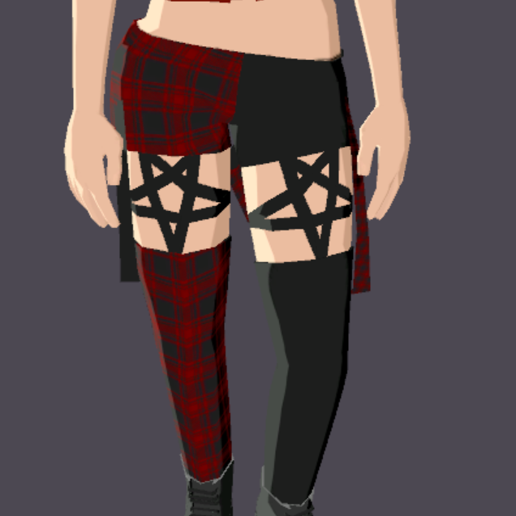
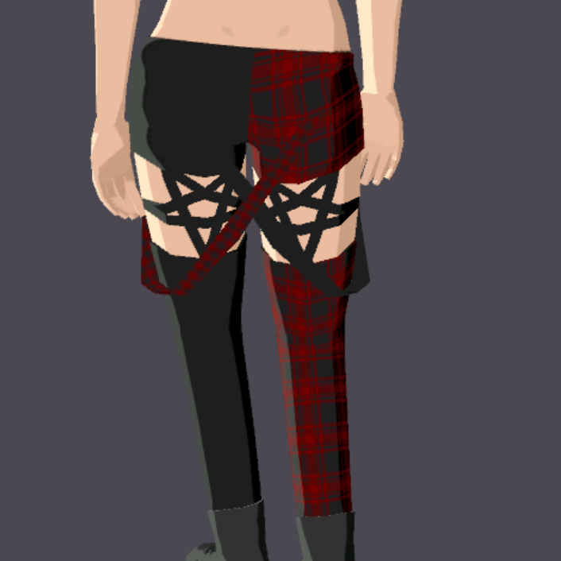
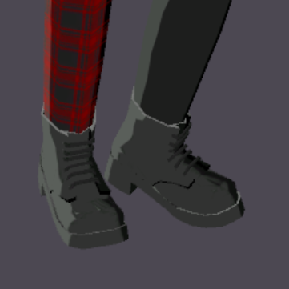
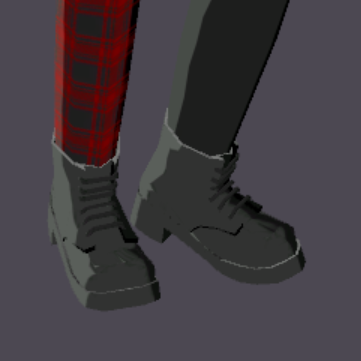

What are Wearables?
Wearables are clothing items, accessories, or user modifications that can be created by companies or users that can be purchased with MANA to customize their avatars. They can be bought, traded, or sold as NFTs(non-fungible tokens).
You can check out wearables that users and companies are creating over at marketplace.decentraland.org.
Contents
First Wearable Project
To start out making wearables I attempted to make a simple collared shirt in Blender for proof of concept. I ran into this weird issue where it wouldn't show up in the builder which is a built-in tool for Decentraland that allows users to see and fix problems with their wearables.I closely followed a few tutorials and asked questions on the Discord and was getting no answer.
I kept going back to the example wearables to try and figure out where exactly I did something wrong but it ended up actually not being me, it was the models Decentraland provided.
Upon further research I actually found out that the skeleton provided for the models on the GitHub were actually wrong and they had the correct skeleton on the Google Drive folders so I was able to clear the parent for the model then re-parent it to the new skeleton and it worked like a charm.

I'm highly aware that it's clipping through the pants and the model itself doesn't look particularly great (mainly the texture and collar) but again, this was a simple model to see proof of concept and really be sure I could actually make working wearables.
Jacket For My Cousin
I updated my cousin with the amazing news that I was finally able to create a wearable and get it properly rigged and working in the builder. He said that's great and then gave me a project he wanted to create. He has a vintage floral design bomber jacket that he thinks could sell. With a quick reference image I immediately got to work, found a quick vintage floral design on the internet to use as a placeholder until my cousin and I created a better image to use.


Again, there's clipping on the pants and that will be getting fixed once I recieve the pattern that my cousin intends on using for the jacket.
Punk Clothing Collection
When I was looking around at the marketplace and what people are putting into the DAO to get approved and found one community to be largely under-represented: the punk/alt commmunity. Believing I found a good niche, I set out to start creating a punk clothing set for both avatar body types.


Earrings
I made quick earrings with studs and an industrial bar because I was so excited that I finally knew how to properly rig up wearables and I got a bit obsessed with earrings for a short period thinking that maybe a cool earring set could go through. After looking at the marketplace though, I saw a bit of competition that quickly made that opinion go away. I ended up settling on one specific design and that's what inspired me to make a full punk clothing set to match the earrings.

Shirt
put some cool important words here and fix the top later
 

Pants
more cool important words

 



Boots
these boots were an absolute fucking nightmare. 2/10 would not do again. fix this to be more tactful later and fix the damn faces in the boots :T
 
